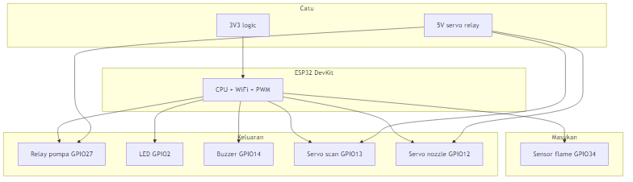
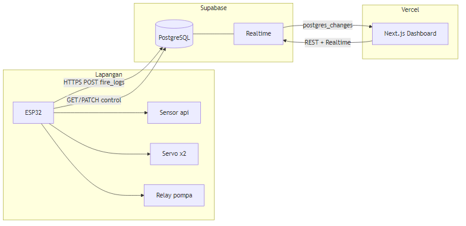
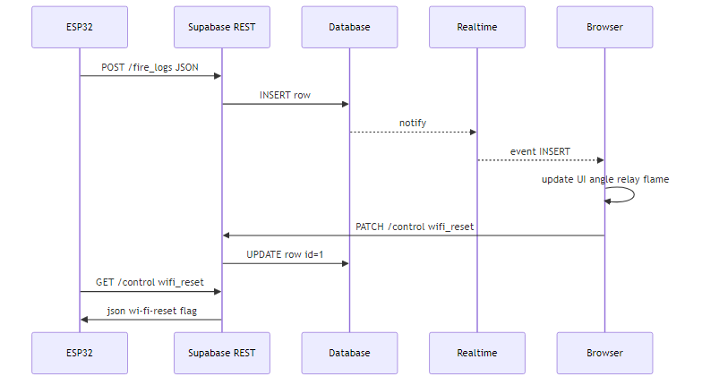
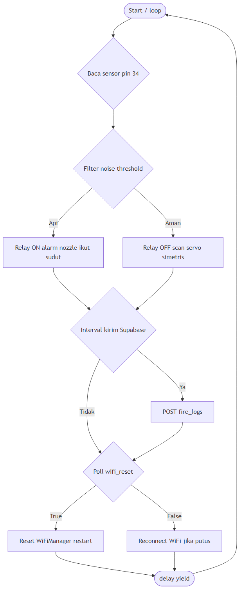
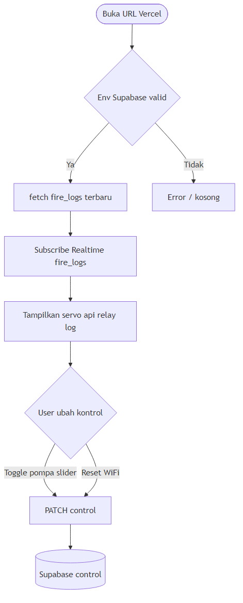

Laporan dokumentasi proyek lengkap — IoT · ESP32 · Supabase · Next.js · Vercel
Penyusunan: 2026
Sistem deteksi kebakaran dini dan respons otomatis (misalnya aktifkan pompa) penting untuk mengurangi risiko kerugian. Dengan Internet of Things (IoT), sensor dan aktuator di lapangan dapat dipantau dari jarak jauh. Proyek ini menghubungkan ESP32 sebagai node lapangan, Supabase sebagai basis data dan saluran realtime, serta aplikasi web Next.js yang di-deploy di Vercel.
Laporan menjelaskan komponen apa saja yang dipakai, alur data dari sensor hingga browser, dan cara kode dijalankan pada firmware maupun frontend.
| No | Komponen | Fungsi | Catatan |
|---|---|---|---|
| 1 | ESP32 | MCU + WiFi, jalankan firmware | Stabilkan catu & GND |
| 2 | Sensor api (pin 34) | Deteksi api (digital) | GPIO34 input-only |
| 3 | Relay (pin 27) | Pompa / beban | Active low di firmware |
| 4 | Servo ×2 (13, 12) | Scan & nozzle | Catu 5 V terpisah cukup ampere |
| 5 | LED (pin 2) | Indikator | — |
| 6 | Buzzer (pin 14) | Alarm | — |
| 7 | Catu daya | 5 V servo/relay, 3V3 logika | GND bersama |

| Komponen | Peran |
|---|---|
| Arduino Core ESP32 + WiFiManager | Firmware & portal WiFi |
| ESP32Servo | PWM servo |
| HTTPClient | REST ke Supabase |
| Supabase | PostgreSQL, PostgREST, Realtime |
| Next.js 16 / React 19 | UI dashboard |
| Supabase JS | Query + subscription |
| Vercel | Hosting web |
Seluruh komunikasi melewati Supabase. ESP tidak memanggil domain Vercel; browser dan ESP sama-sama memakai URL & kunci project Supabase.

Urutan pesan saat log masuk dan saat kontrol/reset WiFi lewat tabel control:

/rest/v1/fire_logs.control; ESP GET periodik memeriksa wifi_reset.Berkas: esp32_fire_system.ino.
setup()FIRE_SYSTEM_FIKRI) bila perlu.loop()fire_logs pada interval.wifi_reset pada control.yield() + delay kecil agar stack WiFi stabil.
Berkas utama: app/page.tsx (client component).
fire_logs, fetch log terkini, subscribe Realtime.PATCH ke control?id=eq.1; tombol reset mengirim wifi_reset.created_at data terakhir (bukan ping WiFi langsung).
flame, relay, angle, created_at, dll.).id=1) untuk perintah UI, termasuk wifi_reset.| Gejala | Kemungkinan | Tindakan |
|---|---|---|
| 401 dari ESP | URL/key salah | Salin anon key & URL satu project |
| Insert ditolak | RLS | Policy INSERT/SELECT |
| UI tidak live | Realtime | Aktifkan replikasi tabel untuk Realtime |
| Servo bergemetar | Catu lemah | Catu 5 V terpisah, GND bersama |
Sistem mengintegrasikan ESP32, Supabase, dan Next.js melalui pola pusat data tunggal. Firmware bekerja dalam loop waktu-nyata dengan tugas jaringan terjadwal; aplikasi web reaktif terhadap peristiwa basis data.
Saran: kolom device_id untuk multi-board; firmware membaca control agar kontrol web sama dengan hardware; autentikasi untuk produksi.
Dokumen ini dapat dicetak ke PDF dari browser (Ctrl+P → Simpan sebagai PDF) atau dihasilkan dengan Chrome headless dari repositori proyek.